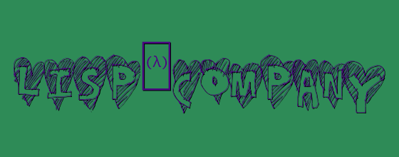
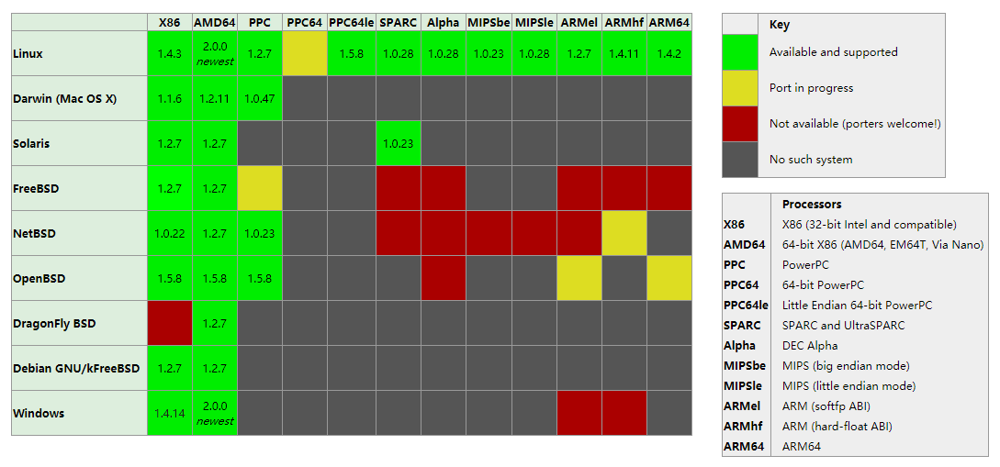
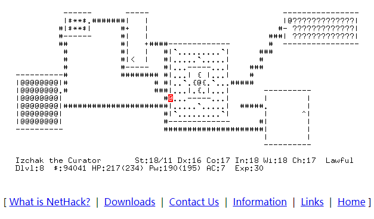
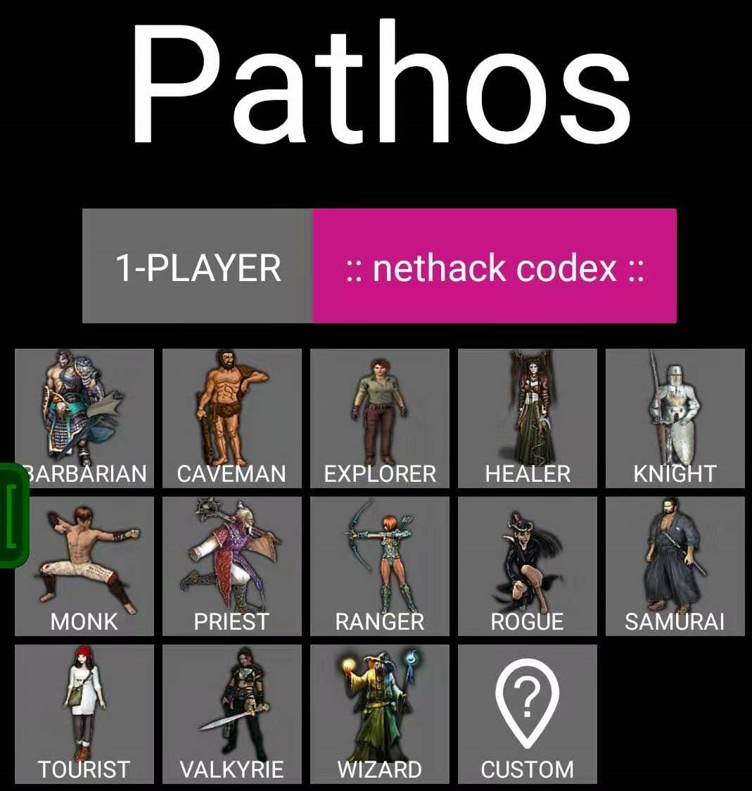
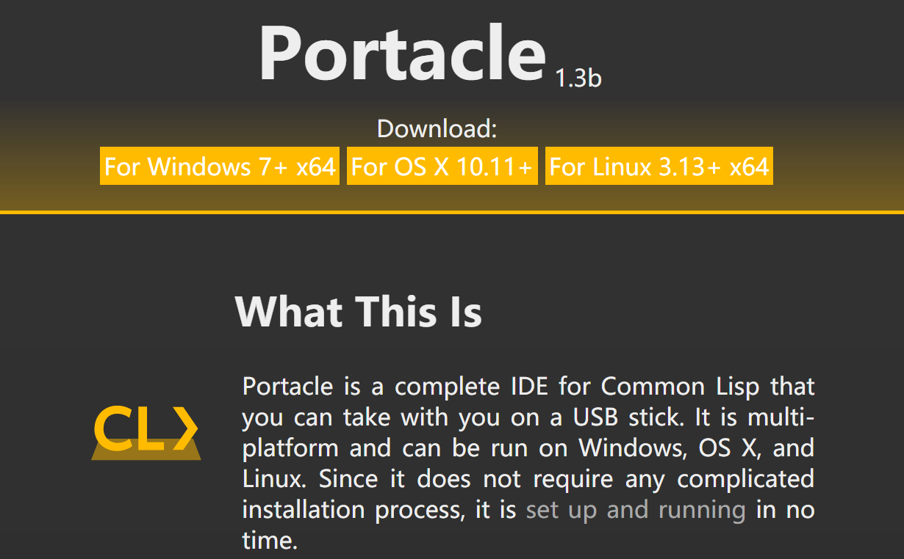
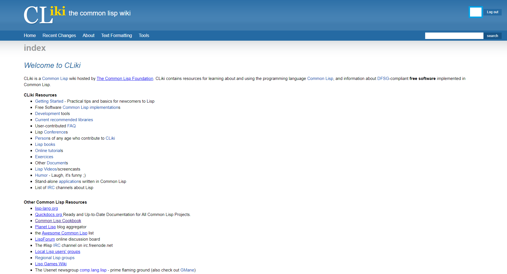
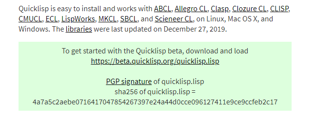
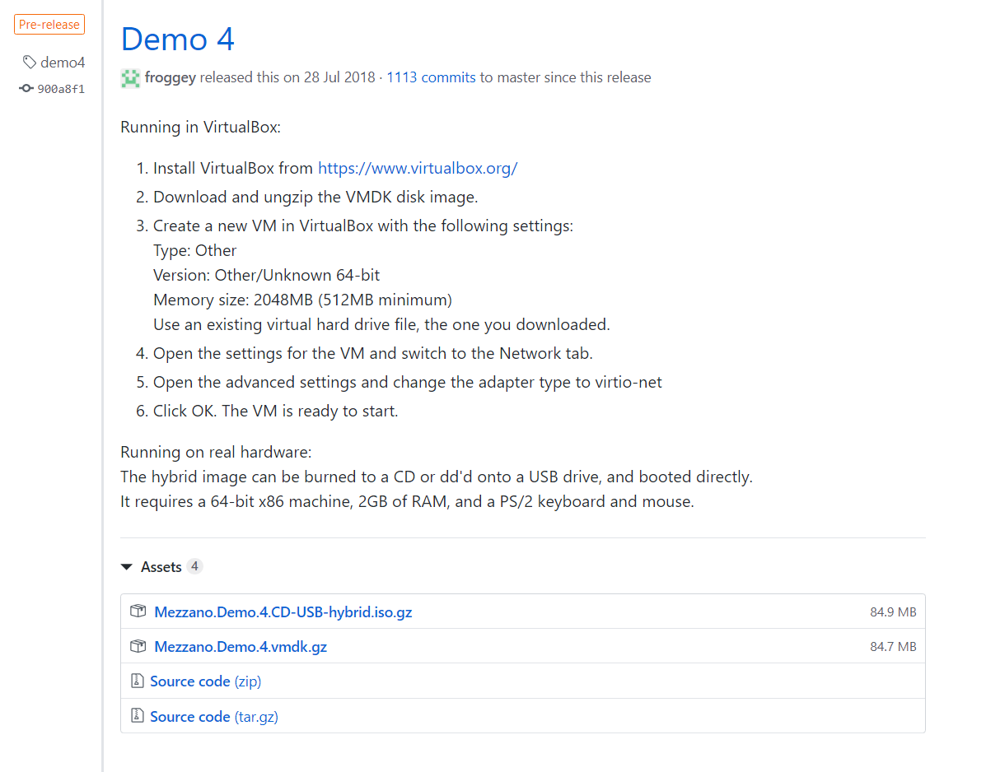

UpdateNews1.lisp.company
出了一些问题，暂时发布到doduiu。
第一期 lisp.company

- 时间: 2020-01-02 星期四 芜湖
- 制作: lisp.company制作小组联合制作。
- 不出意外的话每月更新一期，只少不多。
Independent Update News.
News
Steel Bank Common Lisp (SBCL 2.0.0)
Steel Bank Common Lisp is a high performance Common Lisp compiler. The most recent version is SBCL 2.0.0, released December 29, 2019 (release notes).

编译器SBCL 更新了Linux、Windows下64位的2.0版本，通俗的说体验新特性吧。
NetHack (3.6.4)
The NetHack DevTeam is announcing the release of NetHack 3.6.4 on December 18, 2019.

Information on the current release (NetHack 3.6.4)
- Read the NetHack 3.6.4 release notes.
- Download NetHack 3.6.4 here.
- List or Search the NetHack 3.6.4 known bugs.
- Read the NetHack 3.6.4 documentation and Guidebook.
Roguelike游戏NetHack 有win10版，支持全平台，Play上有安卓版，图形界面版本显得不那么抽象，相近的一款Roguelike游戏是Pathos.对于NetHack的评价大概就是一款能玩一辈子的游戏。
Pathos (1.0)
Pathos is a dungeon adventure game with the soul of Nethack. Tile graphics, sound effects and touch-first interface. Fun and fast to play on iOS, Android and Windows.

by Ghastly13 - Version - 1.0 - Oct 13, 2015.
Roguelike游戏Pathos也是非常不错滴，比起NetHack，只有小孩纸才做选择题，大人全都要。
Portacle (1.3b)
Portacle is a complete IDE for Common Lisp that you can take with you on a USB stick. It is multi-platform and can be run on Windows, OS X, and Linux. Since it does not require any complicated installation process, it is set up and running in no time.

CL的开发装甲，更新好一段时间了，这个项目的优点在于免去了自己配置环境的麻烦，一步到位，而且对于中文支持很友好。
CLiki (站点)
CLiki is a Common Lisp wiki hosted by The Common Lisp Foundation. CLiki contains resources for learning about and using the programming language Common Lisp, and information about DFSG-compliant free software implemented in Common Lisp.

CL的学习资源，除非你看不懂，看不懂也没关系，反正都是从不懂到懂。
ABCL (1.6.0)
Armed Bear Common Lisp (ABCL) is a full implementation of the Common Lisp language featuring both an interpreter and a compiler, running in the JVM. Originally started to be a scripting language for the J editor, it now supports JSR-223 (Java scripting API): it can be a scripting engine in any Java application. Additionally, it can be used to implement (parts of) the application using Java to Lisp integration APIs.
ABCL 1.6.0 supports building and running on openjdk6, openjdk7, openjdk8, and openjdk11.
编译器ABCL 更新1.3.0版本，19年11月22日。及时更新，不懂的请参考文档。
Clojure (1.10.1)
June 6, 2019.
所以呢！没太找准定位的，请再学一次。
Racket (7.5)
November 2019.
racket 更新许可及bug。
quicklisp (beta)
Quicklisp is a library manager for Common Lisp. It works with your existing Common Lisp implementation to download, install, and load any of over 1,500 libraries with a few simple commands.
Quicklisp is easy to install and works with ABCL, Allegro CL, Clasp, Clozure CL, CLISP, CMUCL, ECL, LispWorks, MKCL, SBCL, and Scieneer CL, on Linux, Mac OS X, and Windows. The libraries were last updated on December 27, 2019.

好用，易用，方便，快捷。看到更新日期，开发者很勤奋。
PicoLisp (19.12)
PicoLisp is a programming language, or really a programming system, including a built-in database engine and a GUI system!
It’s simple and lightweight and encourages clean, concise code - just like every other language.
最早知道Picolisp 是我在用Termux 的时候发现的。
Mezzano (demo4)
Mezzano, an operating system written in Common Lisp.
Mezzano 操作系统，厉害了呢。
- News Listing (0.0.1) 在清单中增加要关注的项目名称帮助获取更新信息。
- 本News由lisp.company制作小组、doduiu和XianLonGames联合制作。
- 制作过程中力求做到正确性，若有不准确的地方请多多指正。
- 没有洞察人心的力量，不知道别人喜欢什么，只知自己喜欢什么。
(The End)